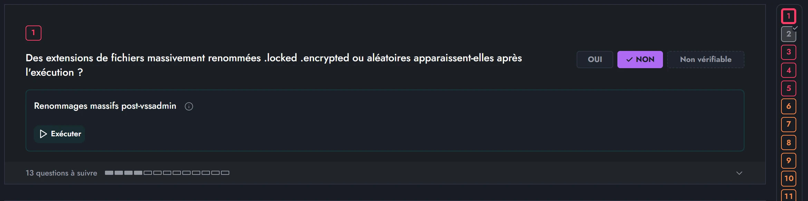

Designer augmenté
Un fil : les guides d'investigation
Août à octobre 2026
Les outils tiennent les rôles, je garde les décisions
Dans une équipe de quatre, il n'y a ni product manager dédié, ni QA, ni second designer. J'ai construit les outils qui tiennent ces rôles. Cette page les suit sur une seule fonctionnalité d'Artefact, les guides d'investigation, de ma propre plainte jusqu'à l'écran livré.
Lire le case study Artefact15
agents spécialisés dans HOMERE, ma méthode de travail outillée
65
dossiers de travail documentés, du brief à la revue
43
scripts de protocole qui pilotent un vrai navigateur
23
identités visuelles dans Naos, ma bibliothèque de design systems
Le point de départ
5 août 2026
Deux écrans
Le point de départ
« Pas claire du tout, trop de couleurs et de boîtes, on perd rapidement le sens de l'outil. »
« Me chiffonne aussi, mais je ne saurais pas déterminer pourquoi. »
Les guides d'investigation sont le cœur d'Artefact : l'analyste y répond à des questions pour qualifier une alerte. La première plainte est précise. La seconde est une gêne que je ne savais pas nommer, et c'est elle que l'outillage devait m'aider à diagnostiquer.
01
Cadrer · HOMERE
Le même jour
Une équipe produit de 15 agents, et moi entre chaque étape
HOMERE est la méthode que j'ai outillée pour Artefact. Chaque agent tient un rôle d'équipe produit et rend un livrable écrit. Rien ne passe à l'étape suivante sans ma validation. Le 5 août, le brief, l'analyse UX, l'architecture et la revue critique ont été rendus dans la journée.
Agamemnon
Cadrage
Brief, 7 questions ouvertes, chaque affirmation sur le code vérifiée.
Ménélas
Analyse UX
Nommer la gêne, pas valider une liste écrite d'avance.
Ulysse
Architecture
Choix techniques et impacts sur les deux pages qui montent les guides.
Nestor
Revue critique
Verdict GO, GO avec réserves ou NO-GO avant tout code.
Je tranche
Les réserves de la revue, les libellés à signer, les arbitrages de périmètre. Chaque décision est consignée avec ma phrase.
Ajax
Découpage
34 tickets en 4 lots, avec leurs critères d'acceptation.
Calchas · Achille
Code
Interface d'un côté, logique et API de l'autre.
Teucros
Tests
Les tests de chaque ticket, puis une passe d'intégration.
Patrocle · Épéios
Revues
Revue du code, revue du design face au design system.
Diomède
Audit
Sécurité, performance et observabilité avant déploiement.
Briséis
Documentation
La doc remise en cohérence avec ce qui a été livré.
J'accepte ou je renvoie
Critère par critère. Une fonctionnalité n'est livrée qu'avec mon acceptation signée.
Trois autres agents travaillent hors du cycle d'une fonctionnalité : Thersite mesure la dette technique, Phénix l'efficacité de la méthode, Idoménée analyse les conflits de fusion.
Le moment clé
La revue m'a contredit. Mon cadrage présentait le premier lot comme un simple refactor, invisible à l'écran. Nestor a montré qu'il changeait l'affichage, et que le critère « rien n'a changé » était donc faux.
« N-1, oui, Nestor a raison, on est pas sur du refactor pur. »
Ma réponse, consignée le 5 août. Conséquence : un script de capture dès le premier lot, et un jeu de données de test exigé avant toute fusion.
02
Décider
Sur mesure, pas au goût
La gêne avait des causes mesurables
-
5 septembre · La couleur
La couleur disait une chose fausse
Chaque bloc du guide portait une teinte parmi 10, répétée 4 fois. La mesure a tranché : 5 de ces 10 teintes étaient à moins de 15° d'une couleur de sens du même écran, et la première était exactement le bleu des « questions froides ». L'identité d'un bloc est devenue un rang et un libellé. La couleur ne dit plus qu'une chose : où en est la question.
-
5 août · La probabilité
Un 0 % s'affichait 50 %
Le calcul remplaçait toute probabilité nulle par 50 %. Le cadrage excluait le calcul, la décision a été de le corriger quand même : 0 % est une probabilité valide, pas une absence de valeur. Afficher un risque moyen sur une investigation où rien n'indique de risque, c'est en inventer un.
-
Lot 2 · Les boîtes
Quatre niveaux de boîtes, il en reste un
Quatre niveaux de conteneurs portaient chacun un fond, une bordure et un arrondi. Seule la carte question en garde un. Les blocs et les questions filles se lisent par le poids du texte, l'espace et des filets.
-
8 septembre · La vue
Supprimer une vue plutôt que la réparer
En relisant le lot suivant ticket par ticket, j'ai décidé de supprimer la vue Panorama. Toutes les questions passent dans une seule liste, triée par température, des plus chaudes aux plus froides. Six tickets sont tombés ou ont changé, et je l'ai consigné plutôt que de laisser des tickets dire faux.
03
Vérifier
Agents, puis utilisateurs
Des relecteurs qui disent ce qu'ils ne peuvent pas valider
Sans données de test, aucune capture « avant / après » n'était possible. J'ai fixé la règle le 5 septembre : une coche veut dire livré, testé et relu, jamais « vu ». Chaque revue de design liste donc nommément ce qu'elle refuse de valider sur le seul code source.
- La revue de code a bloqué un ticket : un filet de 2 px n'en rendait qu'un, sur trois de ses quatre usages.
- Elle a relevé qu'une cible annoncée à 24 px n'en faisait que 22,5 : le produit tournait sur une base de 15 px.
- Le calcul des contrastes a attrapé un compteur à 1,07:1, irréprochable dans le code et invisible à l'écran.
- Il a attrapé un tiret qui partageait ses 5 signaux visuels avec un bouton non répondu : le faux bouton avait quitté le code, pas l'écran.
- Tickets
- 34
- tickets en 4 lots
- Tests
- 420
- tests sur les composants d'investigation, tous verts
- Propriétés
- 27
- propriétés de rendu listées pour la recette à l'écran
- Commits
- 54
- commits sur le dossier de la fonctionnalité

04
Concevoir · Naos
Ce site en sort
Des design systems qu'une IA applique sans inventer
Naos décrit chaque design system en règles qu'un agent peut suivre : couleurs, typographie, formes, sections de référence. Il contrôle chaque écran, couleurs hors charte et accessibilité comprises, puis le rend dans un vrai navigateur, en desktop et en mobile.
- 23identités visuelles, dont celles d'Artefact
- 3 modessite web, écran de produit, présentation
- Ce siterefait dans la DNA Room & Pillar. Le passage du citron au bleu électrique s'est fait en une commande, refusée d'abord : le premier bleu n'atteignait pas 4,5:1 en texte.
- Figmades scripts qui mesurent l'écart entre la maquette et le code, et une synchronisation des tokens de Figma vers le code
05
Ce que je garde
Les garde-fous
Ce que l'outil ne fait jamais à ma place
01
Signer
Les libellés de l'interface, les arbitrages et l'acceptation finale. Onze libellés ont été validés d'un bloc le 5 août, et chaque signature porte ma phrase.
02
Valider sans preuve
Ce qu'un agent ne peut pas vérifier revient à un humain, et une coche ne vaut jamais « vu » quand personne n'a regardé.
03
Contourner un garde-fou
Le premier lot n'a pas pu être fusionné : deux tests de garde étaient rouges pour une raison extérieure à la fonctionnalité. Ils faisaient leur travail, on ne les a pas désactivés. Réécrire les données d'une base partagée a aussi été refusé.
04
Taire ce qui n'est pas fait
Le document de reprise dit aussi ce qui n'a pas été fait. Ici : au moment de la reprise, un lot de 13 tickets restait bloqué, et l'audit, la documentation et l'acceptation sont encore à jouer.
Contact
Parlons de votre équipe produit
© 2026 William Suzan · Designer augmenté